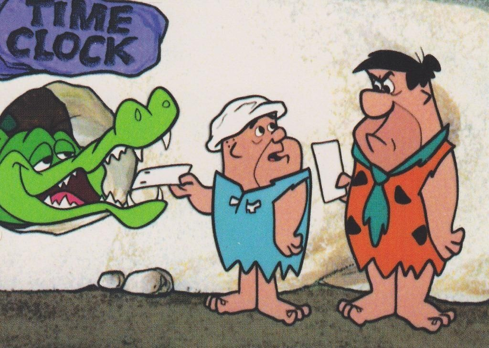
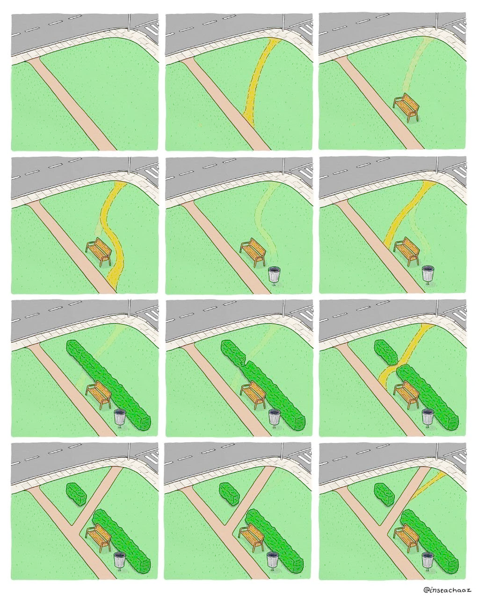

Appeals to nature
Сообщество „рационалистов“ очень ценит интеллект. Интеллект это то, что отличает людей от обезъян, что движет человечество вперед, ультимативная суперспособность и путь к Сингулярности и/или нашей погибели. Неудивительно, что именно эти люди заинтересовались ноотропами – лекарствами, которые якобы увеличивают интеллект. И с учетом своего по большей части технарско-математического бэкграунда, они не стесняются устраивать огромные двойные-слепые эксперименты, собирать статьи и данные, и вообще относиться к задаче серьезно.
Одна из мудростей, которую они сформулировали в процессе исследования – т. н. „Закон Элджерона“ – человеческий мозг находится в локальном эволюционном максимуме, а значит нет такого простого вмешательства, которое бы делало тебя умнее без значительных побочных эффектов. По той же причине, почему нет вещества, которое можно вылить на любую книгу так, чтобы улучшить качество текста внутри. Если бы повышение уровня ***-ина делало бы тебя умнее и все, мозг бы изначально вырабатывал больше ***-ина или делал бы более чувствительные рецепторы. Любой ноотроп должен показать, каким именно образом он находит лазейку в законе, иначе он априори работать не может. Возможно, побочные эффекты смертельны в эволюционном окружении охотников-собирателей, но терпимы сейчас. Возможно, в твоей диете не хватает какого-то вещества, и ноотроп чинит эту недостачу. Возможно, ноотроп помогает тебе только с задачами вроде заполнения таблиц в Excel, под которые мозг изначально заточен не был, и потому не достиг в них локального максимума. Должен быть какой-то „но“, объяснение, почему ноотроп работает для тебя, но не работал бы для идеального первобытного гомо сапиенс.
Интересно то, от кого именно пришел этот закон. Если вы когда-либо разговаривали с техбро, вы знакомы с их склонностью делать далеко идущие выводы из вещей, в которых они не разбираются. Обычно когда не-биологи рассуждают об эволюции, подогнать just-so story можно под что угодно, и результат получается бредятиной. Достаточно посмотреть на лобстеров Джордана Питерсона, вспомнить обоснования объективных стандартов красоты через веселые истории про охотников на мамонтов, или поговорить 10 минут с социал-дарвинистом. С позиции профана очень легко перепутать „хорошее с точки зрения эволюции“ и „хорошее с точки зрения человеческих ценностей“; или забыть про разницу между индивидуальной и генетической приспособленностью; или приписывать эволюции агентность и направление…
{kind=link}
Но праведный халиф рационалистов Элиезер Юдковски много и злобно писал о всех этих типовых ошибках, откуда они берутся, и чем именно „нормисное“ представление об эволюции неверно. Ему явно очень наступил когда-то на ногу весь этот необразованный био-баббл и идущие от него кривые аргументы, и он потратил немало букв на объяснение факта, что биология, особенно эволюционная, это очень неинтуитивная область, и надо проявлять гигантскую осторожность, если хочется рассуждать о ней с позиции профана.
Я вспомнила про эту движуху в контексте апелляции к природе – риторической ошибки, в которой „естественное“/“природное“/“натуральное“ приравнивается к „хорошее“. Плохих аргументов через апелляцию к природе я встречаю, действительно, много. Но интересно то, что почти все они плохие, даже если естественное=хорошее. „Традиционная“ семья изобретена даже не двести лет назад под ограничения индустриальной экономики, но консервативные говорящие головы все равно любят давить на объяснения от биологической природы мужчины и женщины. „Противоестественная“ гомосексуальность повсеместна в дикой природе и у древних людей. „Натуральные“ ингредиенты и лекарства прошли через столько этапов промышленной обработки, что от природы там одно название. Типичный аргумент от апелляции к природе сильнее опровергается не через „естественно не значит хорошо“ (что во многом оценочное суждение), а через „ты неправ о том, что естественно“ (что опирается на научное знание).

„Закон Элджерона“ – пример правильного применения апелляции к природе. Общая форма аргумента все еще „естественное значит хорошее, неестественное значит плохое“ – мозг лучше всего работает в рамках заложенных природой спеков, и любые неестественные вмешательства могут сделать только хуже. Но это не составленный задним числом нарратив, это конкретные биологические механизмы и их последствия.
За последний год я стала сильно более зеленой.
Green seeks harmony, and it tries to achieve that harmony through acceptance. Green is the color of nature, wisdom, stoicism, taoism, and destiny; it believes that most of the suffering and misfortune in the world comes from attempts to cast off one’s natural mantle, step outside of one’s natural role, or fix things which aren’t broken — it’s the color of Chesterton’s Fence. It seeks to embrace what is, harmony as distinct from order
Из всех перспектив „цветного пирога“ зеленая мне всегда была понятна меньше всего, как раз потому что я смотрела на нее через призму „апелляции к природе“. Чем так хорошо фокусироваться на природе? Чем природное лучше рукотворного? Какая фундаментальная ценность в „традициях“, и чем „естественный порядок вещей“ лучше любого другого? Природа не храм, а мастерская, и человек в ней работник!
Моим академическим интересом в последнее время была психиатрия – и ввиду общей эклектичности своего подхода к познанию, я захватывала общую медицину, психологию и биологию. Потребовалось не так уж сильно подняться с позиции „профана“, чтобы полностью изменить взгляд на ситуацию. Многие психические заболевания не похожи на переломы и инфекции, которые суть неизбежный факт существования в физическом мире, от которого можно только защищаться. Это нормальные реакции на ненормальное окружение. Мы животные, которые в неволе грызут себе лапы и расцарапывают морды. Джон Бриер писал, что если отдать должное психической травме, от DSM останется коротенькая методичка. Мозг охотника-собирателя, помещенный в пост-индустриальную экономику, функционирует примерно так же хорошо, как лимузин на песчаных дюнах. Даже если речь идет не о ноотропах, а о лекарствах – все равно выполняется закон Элджерона: человеческий мозг по большей части эволюционно оптимален, любое простое внешнее вмешательство может только уводить его дальше от идеала. Просто мозг, идеальный для современного общества – это не тот же мозг, который прописан у нас в генах.
Многие хештег-рилейтабл проблемы, которые мы принимаем просто со вздохом и объяснением, что жизнь трудна и несправедлива, тоже результат ничего иного как отхода от „естественного хода вещей“. Воспитывать детей сложно, потому что то, как мы делаем это сейчас, очень отличается от того, как заложено природой, а не потому что ну вот такие дети трудные говнюки, которые постоянно плачут. Лень существует, только потому что система мотивации вокруг нас рассчитана на гомо экономикусов, а не потому что есть такой людской порок, экономить энергию и быть эгоистом. Толстеем мы от того, что едим гига-обработанный мусор, переваривать который наш метаболизм не готов 1.
Я не верю, что есть какой-то онтологически объективный „естественный порядок вещей“, который сам по себе фундаментально хорош. Но в не-фундаментальном, а вполне себе прагматичном смысле, различение между „естественный“ и „неестественный“ вполне имеет смысл. Белка, которая питается зубной пастой вместо желудей, будет во многом дефективна и убога; есть некая реальность под утверждением, что „белка не предназначена питаться зубной пастой“ 2.

Джаред Даймонд называл агрикультурную революцию „величайшей ошибкой человечества“. Антрополог Джеймс Скотт в книге „Against the Grain“ описывает становление цивилизации как ход против течения: люди постоянно пытались сбежать обратно в эдемские кущи охоты и собирательства, и только лишь силой их можно было держать на полях и заставлять выращивать пшеницу. В книге историка Сэма Гвинна „Empire of the Summer Moon“, которая описывает столкновение индейцев команчи с европейскими поселенцами, индейские пленники европейцев мечтали об освобождении, но европейские пленники индейцев не хотели возвращаться, а предпочитали продолжать жить с команчи; книга очень явно описывает, какая из двух цивилизаций – питающиеся зубной пастой белки.
Не стоит идти в полный анархо-примитивизм: у цивилизации полно преимуществ, и даже если антибиотики и интернет того бы не стоили, return to monke едва ли возможен. Но „зеленая“ перспектива мне кажется полезной: какие еще наши проблемы исходят от того, что мы отошли от естественного порядка вещей? В каких смыслах мы аналогичны белке, которая питается зубной пастой и не понимает, что с ней не так? Может быть, вместо того, чтобы лечить понос затыканием жопы и изобретать все более крепкие и удобные затычки, стоит искать реальную причину проблемы? Не кормить несчастных антидепрессантами, а строить менее депрессивное общество? Надо искать компромисс между нашей природой „обезъяны с претензиями“ и откровенно искуственным окружением.
A green agent, when presented with a decision or quandary, asks how are these things usually done? What is the established wisdom?
Когда я читала статью про „цветной пирог“ впервые, из всех способов принимать решение этот казался мне наименее осмысленным. Но, рефлексируя, я понимаю, что он для меня работал плохо, потому что мне неоткуда было брать „established wisdom“. У меня был очень ограниченный круг общения, не было единомышленников, не было сообществ, где я могла бы наблюдать чужие решения. Но в тех случаях, когда я могла – это работало очень даже хорошо. Когда я что-то программирую, я сначала ищу готовые решения, примеры кода, ответы на форумах – и потом уже подвожу под свои нужды. Когда я придумываю игровые механики, я отталкиваюсь от того, что уже работает. Это намного проще, чем придумывать самостоятельно с нуля! И сейчас, когда в моем окружении внезапно появились люди, готовые делиться опытом и демонстрировать, как „вещи обычно делаются“ – мой спящий зеленый потенциал проснулся, и моя эффективность во всех смыслах резко выросла. „Established wisdom“ не обязательно лучшее решение – но это хорошая точка, от которой отталкиваться. Начинать с нормы, корректировать по необходимости.
Первобытный охотник-собиратель – это наша норма. Корректировать только по необходимости, и если ты знаешь, что делаешь.
Расширенный закон Элджерона: естественный порядок вещей по большей части оптимален. Любое вмешательство в него должно конкретно обосновать, как именно оно обходит этот закон.
нет, „палео-диета“ здесь не поможет, твой метаболизм уже испорчен
Пример взят у Эдварда Фесера